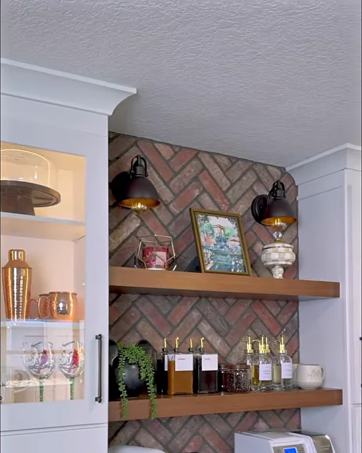
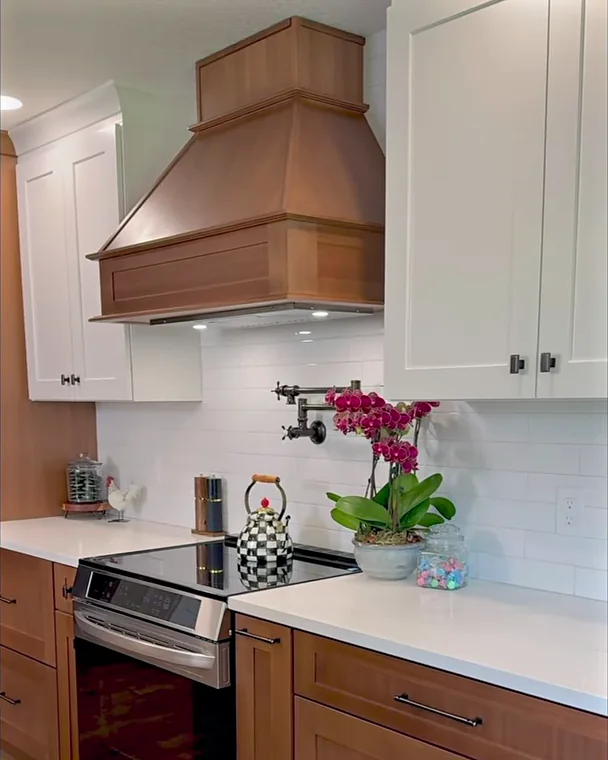
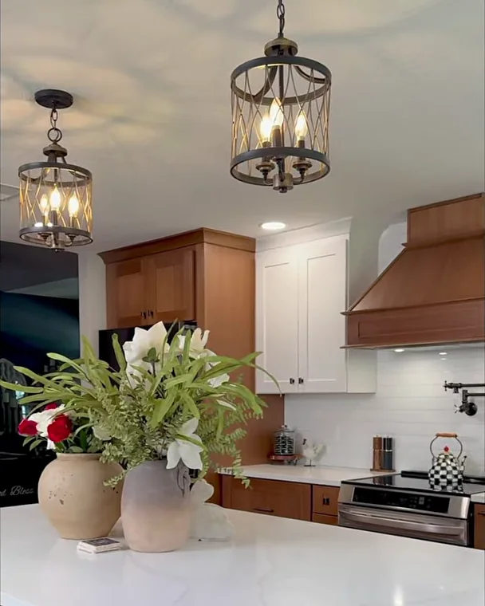
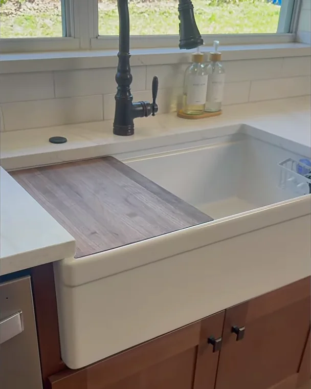

Winter Garden
Orange County, Florida

A coffee bar under brick herringbone, a pot filler over the range, a workstation farm sink and an island that seats three. A real Posada project, toured on film by Mike.
Quartz counters & island · Brick herringbone backsplash · Soft-close drawers & Blum Aventos lift-up doors
Eight minutes in the finished kitchen, explained by the owner: the coffee bar, the lift-up doors, the pot filler, the touchless hood, the workstation sink and the island. Tap to play.

Mike opens every door and drawer: why the coffee bar doors sit on the counter, what a pot filler is for and what it is not, how the hood turns on without a touch, and how three stools tuck under a 12-inch overhang. Filmed in the finished kitchen.
More films on YouTube
"Everything can look good. But is it functional? Do you have kids? How often do you cook? Do you entertain a lot?"Mike Posada, in the film
That was the test for every choice in this kitchen. Here is what went in, as Mike explains it on camera.
Frames from the tour and photographs of the finished kitchen. Tap any photo to enlarge it.





Small decisions, made before demolition, that decide whether a kitchen is still a pleasure to use ten years from now.
A water supply on the wall above the range. You fill a pot where you cook instead of carrying it from the sink, then fold the arm back against the wall. There is no drain, so it is not a second sink. It is a small convenience you use every time you boil water.
Hands covered in flour or raw meat? Wave under the wood hood and the exhaust comes on; wave again and it stops. The surface behind the range is durable and anti-microbial, so a spaghetti splash wipes straight off, and the quartz counter beside it cleans the same way.
A 36-inch apron-front farm sink with a single deep basin. A sliding cutting board or drying rack rides on the rim, so you can prep over the drain instead of the island. The Moen single-handle faucet is paired with an air switch for the disposal, so you never reach for a wall switch with wet hands.
At the coffee bar the solid doors sit on the counter, so nothing is wasted behind a backsplash, and they lift on Blum Aventos hardware and close softly. Pots live in a deep double-drawer base beside the range, spices in a pull-out, sheets and trays in shallow drawers. All of it is soft-close, because a school morning should not sound like slamming doors.
Every Posada kitchen starts the same way: a complimentary in-home consultation, an honest budget range, then design and an itemized proposal before anything is torn out.
Cabinetry, quartz, islands, custom wood hoods and layout changes, designed, priced and built by one team. Typical 2026 ranges for Central Florida kitchens are published on the page, so you can plan with real numbers.
Kitchens & what they costSeven steps from the first visit to the final walkthrough, with one point of contact and a clean site at the end of every day. The $500 kitchen design retainer is credited to your project once the agreement is signed.
See our processFinancing is available through Hearth (NMLS ID 1628533), which works with a network of lending partners, including 0% APR promotional options for qualified homeowners. Posada is not a lender; rates and terms are set by the lending partner.
Financing optionsA complimentary in-home design consultation. We listen to how you cook and live, tell you honestly which range your kitchen falls into, and show the layout in renderings before anything is built.
Call or text · We reply within 24 hours